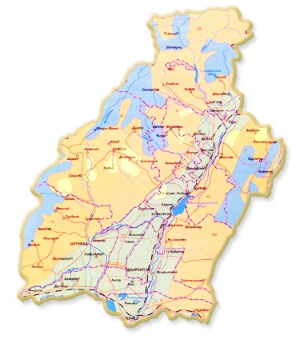

Surkhandarya region is a region within the Republic of
Uzbekistan. It was established on March 6, 1941 (from June 29,
1925 it became Surkhandarya district). It was merged with
Kashkadarya region on January 25, 1960. It was reorganized in
February 1964. It is located in the south-east of the republic,
in the Surkhan-Sherabad valley. The name of the region comes
from the name of the Surkhan (Persian-Tajik: "red") river that
flows through the oasis. It borders Afghanistan along the
Amudarya river in the south, Tajikistan in the north, northeast
and east, Turkmenistan in the southwest, and Kashkadarya region
in the northwest. The area is 20.1 thousand km². The population
is 2821.9 thousand people (as of April 1, 2023). It consists of
14 districts (Angor, Bandikhon, Boysun, Denov, Jarkurgan,
Muzrabot, Altinsoy, Sariosiya, Termiz, Uzun, Sherabad, Shorchi,
Kyziriq, Kumkurgan), 8 cities (Boysun, Denov, Jarkurgan, Termiz,
Shargun, Sherabad, Shorchi, Kumkurgan), there are 114 towns, 865
rural settlements (2020). The center is the city of Termiz.